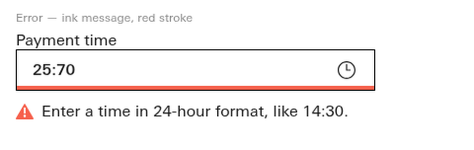
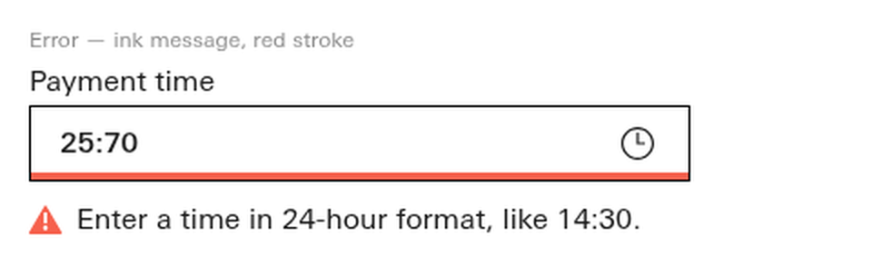
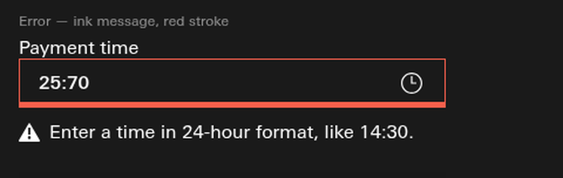
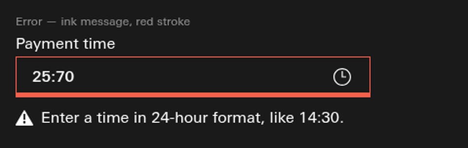

Read this first — what was actually wrong, measured.
1 · Time-picker. The gap under the red stroke was never the defect: it measures 8.00 px box-bottom
to message-box, 12.00 px to the warning triangle, and the message is not clipped (the error card's bottom edge and
the message's bottom edge are the same line, overflow 0.00 px). That 8 px is the whole Input-fields family value
(Date-picker, Amount-input, Textarea, Combobox, Secure-entry, Input-fields all use margin:8px 0 0), so I did not move it.
What was wrong is the other side of the field. The #209 leading-trim block ends a <label>'s box at the
alphabetic baseline, so the y-descender of "Payment time" hangs outside the box and eats the 4 px margin —
measured optical clearance between the descender and the field's top border: 1.00 px. That is the "flush" in your screenshot,
and the heavy red stroke below made the imbalance obvious (1 px above the field, 12 px below it).
2 · Data-grid. The Live/Loading/Empty switcher measures 0.00 px to the "Transactions" section label — literally touching. Confirmed by measurement, not by eye.
⚠ The trim block was NOT removed — you ruled "Keep + canary" and probe P-6 watches it. Both fixes are spacing around it.
Fix 1 — Time-picker, the "Payment time" label sat 1 px off the field
PROPOSED knowledge/snippets/Time-picker.reference.html ·
.tp-lblrow{margin:0 0 4px} → margin:0 0 8px} · one declaration, spacing only.
Where 8px comes from (sibling precedent, not a new value)
Secure-entry.reference.html line 128 already carries .se-lblrow{... margin:0 0 8px;} in the same
Input-fields family. 8 px also restores the pre-#209 optics: before the trim block the label's line box was 16.00 px tall
and the descender sat inside it, giving ~5.44 px optical clearance; 8 px gives 5.00 px.
The numbers (headless Chromium, goto file://, transitions settled, HSBC face asserted)
| Measurement (error variant, "Error — ink message, red stroke") | BEFORE | AFTER | Reading |
|---|---|---|---|
| label box bottom → field top border | 4.00 px | 8.00 px | the changed declaration |
| optical clearance: y-descender → field top border | 1.00 px | 5.00 px | the actual defect and its repair |
| measured descender of "Payment time" @16px | 3.00 px | 3.00 px | canvas actualBoundingBoxDescent |
| label box height (trim block active) | 11.56 px | 11.56 px | trim UNTOUCHED — 16.00 px without it |
| field bottom (red stroke) → error message box | 8.00 px | 8.00 px | unchanged family value |
| field bottom → warning triangle glyph | 12.00 px | 12.00 px | unchanged |
| message bottom vs card bottom (clip test) | 0.00 px | 0.00 px | not clipped, before or after |
| field group height | 89.56 px | 93.56 px | +4.00 px, on grid |
Light


Dark


Open the live file: knowledge/snippets/Time-picker.reference.html
Fix 2 — Data-grid, the state switcher was touching "Transactions"
PROPOSED knowledge/snippets/Data-grid.reference.html ·
.dgseg{ ... } gains margin:0 0 28px} · one declaration, spacing only.
Where 28px comes from (surveyed, not invented)
I measured the same relationship — a demo control row directly above a section heading — across the whole snippet library. Three snippets carry it, and all three measure the same number:
| Snippet | Control row | What follows | Measured gap | Source declaration |
|---|---|---|---|---|
| Split-button | .row (2 buttons) | h2.t-cm-section-label | 28.00 px | h2{margin:1.75rem 0 .6rem} |
| Button | .row (5 buttons) | .spec-h | 28.00 px | 1.75rem |
| Toast | trigger row (2 buttons) | h2 | 28.00 px | h2{margin:1.75rem 0 .7rem} |
| Data-grid (before) | .dgseg (3 buttons) | #dgTitle section label | 0.00 px | — none — |
28 px = 1.75 rem = 7 × 4, on the grid. Split-button is the exact match: control row → t-cm-section-label,
which is the same element Data-grid uses for "Transactions".
The numbers
| Measurement | BEFORE | AFTER | Reading |
|---|---|---|---|
| switcher bottom → "Transactions" label top (light) | 0.00 px | 28.00 px | the fix |
| switcher bottom → "Transactions" label top (dark) | 0.00 px | 28.00 px | same in both themes |
switcher bottom → .dg component top | 0.00 px | 28.00 px | the component block moves as one |
.dgseg computed margin-bottom | 0px | 28px | margin applies through the atomic inline box — verified by render, not assumed |
| Data-grid internal rhythm (head / toolbar / foot) | 12 px | 12 px | untouched — the chrome now reads as chrome |
Light
Dark
Open the live file: knowledge/snippets/Data-grid.reference.html
⚠ Both defects are CLASSES, and I fixed only the two you named
Class A — the collapsed label gap reaches the whole Input-fields family. The comment at the top of that CSS block says
"field group — Input-fields anatomy (lock-step; change it THERE)". Every one of these carries the identical
margin:0 0 4px and therefore the identical 1 px descender clearance wherever a label with a descender abuts a field:
Date-picker, Date-range-picker, Amount-input, Textarea, Combobox, Time-picker (fixed here) and their relatives.
Date-picker's error card is anatomically identical to the one you screenshotted, down to the same inset red stroke.
Fixing Time-picker alone puts it out of lock-step with its family. Sweeping is a decision, not a chore — it is yours.
Class B — the flush switcher is not unique to Data-grid. Table.reference.html has the same
.seg → .wrap relationship and measures 0.00 px too;
Segmented-control.reference.html measures 0.00 px from its .seg md to the following
.section-head-row. Reported, not swept.
Gates, verbatim, after the change
| Gate | Output | rc |
|---|---|---|
knowledge/_validate_grid.py | GRID GATE PASS — all layout dimensions on the 4px grid (116 file(s)). | 0 |
knowledge/_validate_snippets.py | snippet gate: 100 snippet(s), 0 failure(s) | 0 |
knowledge/_validate_a11y.py | a11y gate: 100 snippet(s), 0 failure(s), 186 warning(s), 237 note(s) · 609 controls + 203 marks measured · 107 mark(s) below 24 | 0 |
knowledge/_validate_descender_clip.py (run because it is the gate nearest this class) | DESCENDER-CLIP GATE PASS — every truncating label is descender-safe (116 file(s)). | 0 |
A green gate is not a green claim. None of these four gates could see either defect: the grid gate only checks that values are
multiples of 4 (0 px and 4 px both pass), and the descender-clip gate only fires on labels that truncate
(text-overflow:ellipsis), which these do not. Both defects were found by looking at rendered pixels and measuring them.
Declared — what is unproven or not done
- Nothing here is ruled. Both values are PROPOSED and are yours to accept, move or reject.
- No colour, no token, no canon.css.
knowledge/canon/canon.csswas not regenerated — if these snippets feed the canon components build, a regeneration is owed before the values reach any consumer. Not done, declared. - Not committed and not pushed. CI has not seen this file or either edit.
- The evidence images are PNG renders of the real snippet files, not iframes: the BEFORE state no longer exists on disk, so it could only be carried as a render. The AFTER state is linked live above so you can open the real file.
- Measured at viewport width 1180 only. The narrow (
max-width:480) leg of Time-picker's gallery and Data-grid's container collapses were not re-measured. Declared. - The Time-picker fix moves all four gallery variants and the live field, not only the error card — the label→help gap goes 4 px → 8 px in the Live and Disabled variants. Visible on the live file; call it if you dislike it.